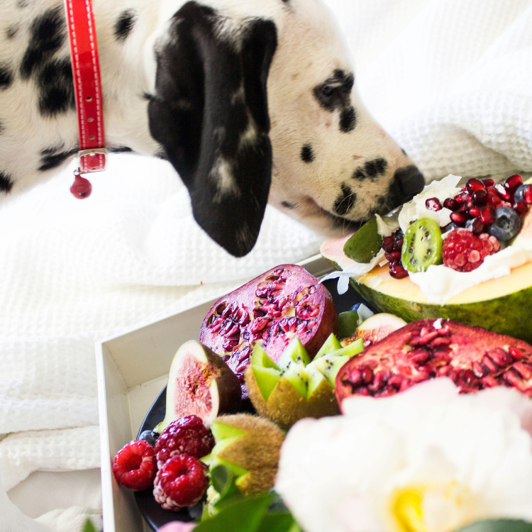

FurryTails|What is Freeze-Dried Pet Food? FAQ on Freeze-Dried Pet Food

Freeze-dried pet food refers to pet food made by rapidly freezing raw meat ingredients and then removing the moisture in a vacuum low-temperature environment. This process maximizes the retention of the ingredients’ nutrition and flavor, making it increasingly popular among pet owners. Freeze-drying technology was initially used for astronaut food to ensure the nutrition and quality of food in a zero-gravity environment. Now, this technology is widely applied in the pet food industry, becoming a healthy and convenient feeding option.
Freeze-Drying Process
- Rapid Freezing: Fresh ingredients are quickly cooled to below freezing, causing the water to form ice.
- Vacuum Drying: In a vacuum environment, the ice crystals sublimate into water vapor, turning directly from solid to gas, removing moisture without passing through a liquid state.
- Minimizing Nutrient Loss: Because the entire process is conducted at low temperatures, heat-sensitive nutrients (such as vitamins and enzymes) are preserved, maintaining the original nutrition of the ingredients.
Why Choose Freeze-Dried Food?
- Preserves Original Nutrition: Freeze-drying technology retains all the nutrients in the ingredients, especially those that are easily lost during high-temperature cooking.
- Convenient Storage and Carrying: Freeze-dried food has no moisture, is not prone to spoilage, and is lightweight, suitable for long-term storage and carrying.
- High Palatability: Retains the flavor and texture of raw meat, which most pets love, making it ideal for picky eaters.
Simple Feeding: Can be rehydrated with water or fed directly, making it very convenient.
Benefits of Freeze-Drying
- Retains Raw Nutrition: Compared to high-temperature processed dry food, freeze-drying preserves heat-sensitive nutrients like the B vitamins, retaining the nutritional value of the ingredients.
- Maintains Original Appearance: During the freeze-drying process, the moisture in the ingredients sublimates, keeping the structure intact, thus maintaining the size and color of the ingredients. This technology is even used by NASA for astronaut food, earning freeze-dried food the nickname “space food” for pets.
- Maintains Freshness: Freshness is critical for raw food, and improper handling can lead to bacterial growth. Choosing high-quality freeze-dried products can save the hassle of handling raw meat and ensure hygiene and health.
- Rehydration: Freeze-dried food has a porous structure that quickly absorbs water. Just add water in proportion to rehydrate it back to its original state, maintaining its nutritional value.
- High Palatability: Freeze-drying retains the nutrition and original appearance of raw food, with rich flavor and a soft texture, suitable for picky or dental-challenged pets.
- Room Temperature Storage: Without moisture, freeze-dried food can be stored at room temperature without preservatives, making it convenient for busy pet owners.
Drawbacks of Freeze-Drying
- Shorter Shelf Life After Opening: Freeze-dried food easily absorbs moisture from the air, leading to oxidation and spoilage if not stored properly after opening.
- Higher Cost: The freeze-drying process is time-consuming and requires expensive equipment, making freeze-dried food more costly.
How to Feed Freeze-Dried Food
- Rehydration: Add warm water at a “freeze-dried: water = 1:3” ratio and soak for 10-15 minutes before feeding.
- Direct Feeding: Can be fed directly or used as a treat, or crumbled and sprinkled over dry food or canned food.
Suitable Pets for Freeze-Dried Food
Freeze-dried food is suitable for picky eaters, pets with sensitive skin and stomachs, those needing weight management, high-activity pets, dental-challenged pets, and pregnant or nursing cats and dogs.
Frequently Asked Questions about Freeze-Dried Food
Can freeze-dried food be used as a staple diet?
- Yes, but choose freeze-dried food that meets the nutritional requirements for a complete diet.
Can humans eat pet freeze-dried food?
- Yes, but it is designed for pets, so the taste may not be suitable for humans.
Is freeze-dried food considered raw meat?
- Yes, because it has not been cooked, it is considered raw food.
Can freeze-dried food contain parasites?
- Properly processed freeze-dried food should not contain harmful bacteria or parasites.
Can freeze-dried food spoil?
- If not stored properly after opening, it can spoil. It is recommended to keep it in a cool, dry place and use it up quickly.
Can kittens eat freeze-dried food?
- Kittens can start trying solid protein foods at around 4 weeks of weaning.
Recommended Freeze-Dried Products
Here are selected products from Amazon to assist in your decision-making. Links may contain affiliate marketing programs, where clicking and purchasing may generate a small commission for us (at no additional cost to you), helping maintain our website operations.
Stella & Chewy’s Freeze-Dried Raw Single Ingredient Beef Heart Treats Purchase Link
- 100% pure freeze-dried raw beef heart
- Suitable for pets with food allergies
- Supports healthy digestion, strong teeth, and a shiny coat
Stella & Chewy’s Freeze-Dried Raw Single Ingredient Chicken Breast Treats Purchase Link
- Contains chicken and various organic vegetables
- Supports a healthy digestive system
Instinct Raw Boost Mixers Freeze-Dried Raw Dog Food Topper Purchase Link
- Enhances digestive health
- Grain-free, natural ingredients
- Ideal for picky eaters
ORIJEN Original Cat Grain Free Dry Cat Food Purchase Link
- Contains 90% animal ingredients
- Supports digestion, skin health, and heart health
Vital Essentials Freeze-Dried Raw Cat Treats Purchase Link
- Contains high-quality, responsibly sourced premium minnows
- Supports peak vitality, healthy skin, shiny coat, strong teeth, and essential gut health
Want to gain a deeper understanding of dog behavior and how to care for them? Click the link below to read more related articles. read more related articles
Want to gain a deeper understanding of cat behavior and how to care for them? Click the link below to read more related articles. read more related articles